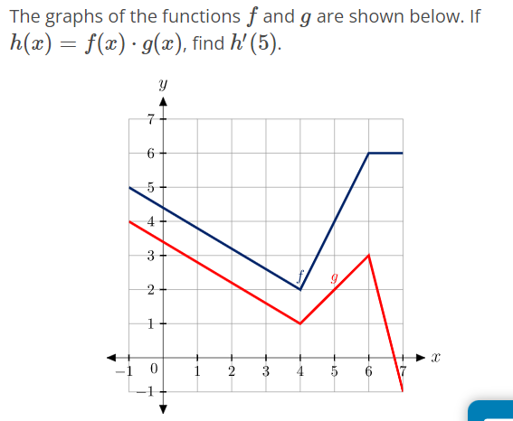

Derivatives
Contant Rule: Taking the derivative of a constant is \(0\)
\[ f(x) = c \] \[ f'(x) = 0 \]
Power Rule: \[ f(x) = x^{n} \] \[ f'(x) = nx^{n-1} \]
Sum & Difference Rules: Taking the derivative of the sum or difference of \(g(x)\) and \(f(x)\) is the same as the derivative of \(g(x)\) plus or minus the derivative of \(f(x)\) \[ \frac{\text{d}}{\text{dx}}(f(x) \pm g(x)) \text{ } = \text{ } \frac{\text{d}}{\text{dx}}(f(x)) \pm \frac{\text{d}}{\text{dx}}(g(x)) \]
Constant Multiple Rules: Taking the derivative of a constant times a derivative is the same as the constant multiplied by the derivative \[ \frac{\text{d}}{\text{dx}}(kf(x)) \text{ } = \text{ } k\frac{\text{d}}{\text{dx}}(f(x)) \]
Example
\[ \frac{\text{d}}{\text{dx}}\left(\frac{3x}{2}\right) \text{ } \rightarrow \text{ } \frac{3}{2}\frac{\text{d}}{\text{dx}}\left(x\right) \text{ } \rightarrow \text{ } \frac{3}{2}\left(x^{1-1}\right) \text{ } \rightarrow \text{ } \frac{3}{2} \]
Product Rule: Taking the derivative of a function times a function \[ \frac{\text{d}}{\text{dx}}(f(x)g(x)) \text{ } = \text{ } f'(x)g(x) + g'(x)f(x) \]
Quotient Rule: Taking the derivative of a function divided by a function \[ \frac{\text{d}}{\text{dx}} \left(\frac{f(x)}{g(x)}\right) \text{ } = \text{ } \frac{f'(x)g(x)-g'(x)f(x)}{(g(x))^{2}} \]
24+2 x (-25+6 x (2+x))
Chain Rule: to allow us to differentiate composite funtions
\[h(x) = (f \circ g)(x) = f(g(x))\] \[h'(x) = f'(g(x))g'(x)\]
Chain and Power Rules Combined: \[ h(x) = (g(x))^{n} \] \[ h'(x) = n(g(x))^{n-1}g'(x) \]
Example
\[ \textbf{Find }\frac{\text{dy}}{\text{dx}} \text{ if } y = (2-x^{2})^{-5} \] \[ \textbf{Answer: } -5(2-x^{2})^{-6}(-2x) \]
These problems…

They say \(h(x) = f(x)*g(x)\)
They want us to find \(h'(x)\)
The product rule applies here because two functions are being multiplied together
The tricky part is to remember how to find \(f(x)\), \(f'(x)\), \(g(x)\), and \(g'(x)\)
To find functions, just plug in the \(X\) and there there’s the \(Y\).
The derivatives of functions are the slope at that point. Here we see that the slope of \(f(x)\) at 5 is \(2\) and the slope of \(g(x)\) at 5 is \(1\)
Common Errors/Notes
- Remember that the denominator of the quotient rule is \((g(x))^{2}\), not \((g'(x))^{2}\)
Other Examples:
Example
Find \(k'(x)\) \[ k(x) = -2x\left(h(x) + 2x^{2}g(x))\right) \] From here, distribute the \(-2x\) \[ k(x) = -2x\left(h(x) + 2x^{2}g(x))\right) \] Now take the derivative of each side \[ \frac{\text{d}}{\text{dx}} \left(k(x)\right) \text{ } = \text{ } \frac{\text{d}}{\text{dx}} \left( -2x\left(h(x) + 2x^{2}g(x))\right) \right) \] Notice the double chain rule \[ \frac{\text{d}}{\text{dx}} \left(k(x)\right) \text{ } = \text{ } \frac{\text{d}}{\text{dx}} \left(-2x * h(x) \right) + \frac{\text{d}}{\text{dx}} \left(-4x^{3} * g(x) \right) \] Derivative on the right \[ \frac{\text{d}}{\text{dx}} \left(-2x * h(x) \right) \rightarrow -2*h(x) - 2x * h'(x) \] Derivative on the left \[ \frac{\text{d}}{\text{dx}} \left(-4x^{3} * g(x) \right) \rightarrow -12x^{2} * g(x) - 4x^{3} * g'(x) \] Now combine everything \[ k'(x) = \left(-2*h(x) - 2x * h'(x)\right) + \left(-12x^{2} * g(x) - 4x^{3} * g'(x)\right) \] Now substitute the values given and use algebra to simplify it
Second Derivative Section
This is about: - taking the derivative a second time - local maximun and minimum - first and second derivative tests
- decreasing in polynomial each time a derivative is taken
d/dx == d*f(x)/dx Find the derivative of f(x) in terms of x
Advanced Algebra Syntax
\[ \log_{}{x} = \log_{10}{x} \]
\[ \ln{x} = \log_{e}{x} \]
\[ e = 2.718\text{...} \]
Notes from Hawanay’s Dec 2nd Tutoring Appointment
1) Logarithms
\[ b^{e} = n \text{ is the same as } \log_{b}n = e \]
\[ \log(x) = \log_{10}(x) \] \[ \log_{e}(x) = \ln(x) \]
2) Derivative of \(e\) & \(e^{u}\)
Derivative of \(e^{x} = e^{x}\)
- This is because the derivative of the function is the function
Derivative of \(e^{u} = e^{u}u'\)
3) Derivative of a Natural Log
\[ \frac{d}{dx}(\ln x) = \frac{x'}{x} \]
Or… is it \(\frac{d}{dx}(\ln x) = \frac{1}{x}\)? I learned the method above in tutoring and on the tutoring center’s math sheet, but I see on Knewton that the other fraction is used.
Apparently there is a way to do this using the chain rule, but she does not reccomend that method, but rather this rule.
4) Order of Operations
\(-1(x+5)^{-2}\), the correct order of PEMDAS is to do the \(-2\) exponent first, the the multiplication of \(-1\) times the base.
Think of it like this, \(-1 * (x+5)^{-2}\)
P E M D A S
Exponents come before multiplication
5) See when to use the Chain Rule
Taking that problem above a step to the side,
The derivative of \(-1(x+5)^{-2}\) is
$$
$$
6?
When given \(k(x) = x\left(2x+\frac{1}{x+3}\right)\) to find \(k'(x)\), there are two ways. Either:
- preform the product rule from here
or
- distribute the \(x\), then take the derivative from there (which will include either a quotient rule or a chain & product rule)